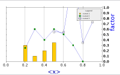
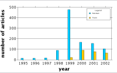
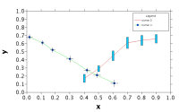
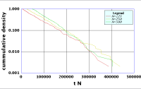
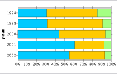

JCCKit Examples
Here are a few static, dynamic, and interactive examples showing the possibilities of JCCKit.Static Examples
Click on the thumbnails to see the enlarged example as an applet in an extra window. If your browser understands SVG (or has an SVG plugin) you can also view the chart renderered as an SVG document:
|  |  |  |
| as an SVG document | as an SVG document | as an SVG document |
){kind=link}
){kind=link}
){kind=link}
|  |  |
| as an SVG document | as an SVG document |
){kind=link}
){kind=link}
Dynamic Examples
Here are same applet showing how JCCKit can be used in animations. All examples are explained (with source code) in the chapter 2. Usage as a Library of the User Guide.Animated Chart
By clicking the animate button the chart will be built up in an animated way.
Lorenz attractor
Simulation of the famous chaotic attractor of the Lorenz equations (a set of three ordinary first-order differential equations).

Brusselator
This is a simulation of the Brusselator (a fictious system of autocatalytic chemicals developing a Turing instability which leads to self-organized pattern formation).
Interactive Example
This example applet shows that interaction with a chart is also possible.
(C) 2003-2004 Franz-Josef Elmer. All rights reserved. Last modified: 7/3/2003